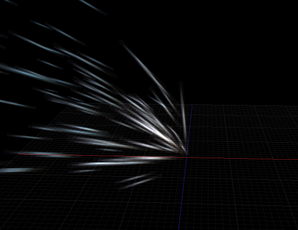

Continuing about my last post on Particle Editor thread, I think it’s better to create new thread specified about direction support of particles/billboard.
I’m experimenting about particle direction inspired by Unity stretched billboard particles. If you have tried that on Unity, stretched particle can create pseudo 3d effect despite still using billboard. It can be really useful for sparking effects and many other stuffs. Here are the screenshots:
And this is what happens if using constant force and setting up direction min and max:

You can see this feature in action on this video:
[video]https://www.youtube.com/watch?v=zR7KtF6qtaU[/video]
About the implementation, I modify the billboard object to store direction. This data only works if new face camera mode FC_DIRECTION is used. If this mode is used, billboard will rotate facing camera with direction as axis, so it will create pseudo 3D effect. Because every billboard has different rotation, Urho needs to calculate rotation for every billboard. For now, CPU is doing those calculation, but I have plan to move them to the GPU.
I have already create a branch on Github if you want to test it out. It’s still only works on OpenGL though. I hope this branch can be merged to the master soon. 


{kind=link}
{kind=link}